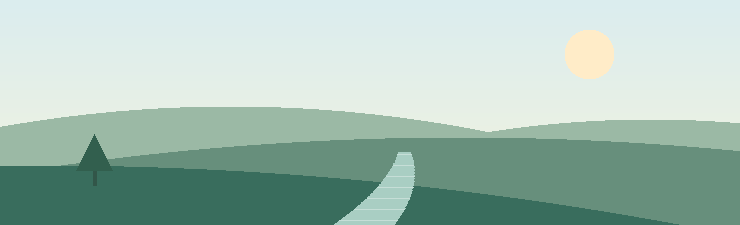

SMALL TOOLS, USEFUL THINGS
A small workshop
Careful experiments. Readable pages.
Useful tools, made one small step at a time.

Today's experiment: open a native Wayland window, fetch a page, and draw its text from real font outlines.
Take a look around
The long article is a good place to try scrolling, headings, lists, and links. This page keeps the layout simple enough that each part can be inspected.
Tools become useful through small, testable steps. This is the first one.